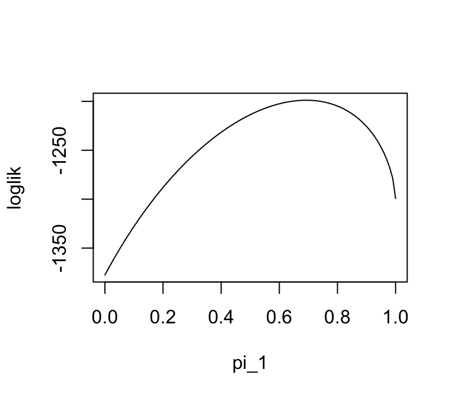
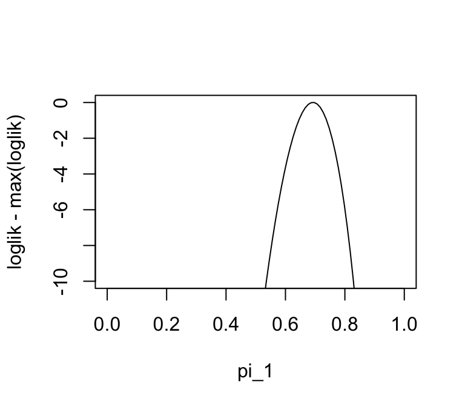
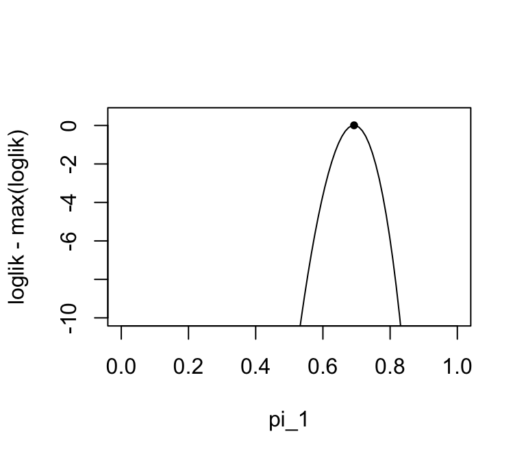

A prelude to the EM algorithm
Matthew Stephens
University of ChicagoJanuary 12, 2026
Last updated: 2026-01-12
Checks: 7 0
Knit directory: fiveMinuteStats/analysis/
This reproducible R Markdown analysis was created with workflowr (version 1.7.1). The Checks tab describes the reproducibility checks that were applied when the results were created. The Past versions tab lists the development history.
Great! Since the R Markdown file has been committed to the Git repository, you know the exact version of the code that produced these results.
Great job! The global environment was empty. Objects defined in the global environment can affect the analysis in your R Markdown file in unknown ways. For reproduciblity it’s best to always run the code in an empty environment.
The command set.seed(12345) was run prior to running the
code in the R Markdown file. Setting a seed ensures that any results
that rely on randomness, e.g. subsampling or permutations, are
reproducible.
Great job! Recording the operating system, R version, and package versions is critical for reproducibility.
Nice! There were no cached chunks for this analysis, so you can be confident that you successfully produced the results during this run.
Great job! Using relative paths to the files within your workflowr project makes it easier to run your code on other machines.
Great! You are using Git for version control. Tracking code development and connecting the code version to the results is critical for reproducibility.
The results in this page were generated with repository version c2a34a7. See the Past versions tab to see a history of the changes made to the R Markdown and HTML files.
Note that you need to be careful to ensure that all relevant files for
the analysis have been committed to Git prior to generating the results
(you can use wflow_publish or
wflow_git_commit). workflowr only checks the R Markdown
file, but you know if there are other scripts or data files that it
depends on. Below is the status of the Git repository when the results
were generated:
working directory clean
Note that any generated files, e.g. HTML, png, CSS, etc., are not included in this status report because it is ok for generated content to have uncommitted changes.
These are the previous versions of the repository in which changes were
made to the R Markdown (analysis/em_algorithm_01.Rmd) and
HTML (docs/em_algorithm_01.html) files. If you’ve
configured a remote Git repository (see ?wflow_git_remote),
click on the hyperlinks in the table below to view the files as they
were in that past version.
| File | Version | Author | Date | Message |
|---|---|---|---|---|
| Rmd | c2a34a7 | Peter Carbonetto | 2026-01-12 | wflow_publish("analysis/em_algorithm_01.Rmd", view = F) |
| Rmd | 01861fa | Peter Carbonetto | 2026-01-12 | Some updates to the em prelude vignette. |
| html | a221240 | Peter Carbonetto | 2026-01-09 | Push a bunch of updates to the webpages. |
| Rmd | 4e44239 | Peter Carbonetto | 2026-01-09 | Added pdf versions of mixture_models_01 and em_algorithm_01 vignettes. |
| html | 2010ac2 | Matthew Stephens | 2021-01-26 | Build site. |
| Rmd | 4acbd4e | Matthew Stephens | 2021-01-26 | workflowr::wflow_publish("em_algorithm_01.Rmd") |
| html | 62ff01f | Matthew Stephens | 2021-01-26 | Build site. |
| Rmd | e551909 | Matthew Stephens | 2021-01-26 | workflowr::wflow_publish("em_algorithm_01.Rmd") |
See here for a PDF version of this vignette.
Prerequisites
This document assumes basic familiarity with mixture models, likelihoods and Bayesian computations for the two-class problem.
Overview
The expectation-maximization algorithm, usually known as the “EM algorithm”, is a widely used computational method for performing the maximum likelihood method in certain models. Its attractions include that it is often simple to code and it is “monotonic” (that is, every iteration increases the likelihood). It is also often quick to find a “reasonably good” solution, although if a very precise solution is required, then it can be slow. In this document we describe the EM algorithm for a particular problem — maximum likelihood estimation of the mixture proportions — where it has a particularly simple and intuitive form. We do not give any formal derivation or explain why it works, which will require further study. The idea is to motivate you to perfom this further study.
The problem
Consider again the medical screening example from [this vignette][mixture_model_01]. This example involves a test for a disease that is based on measuring the concentration (\(X\)) of a protein in the blood. In normal individuals, \(X\) has a Gamma distribution with mean 1 and shape 2 (so the scale parameter is 0.5, as scale = mean/shape). In diseased individuals the protein becomes elevated, and \(X\) has a Gamma distribution with mean 2 and shape 2 (so scale = 1).
Now consider the following question. Suppose we observe data \(x_1, \dots, x_n\) on \(n\) individuals randomly sampled from a population. How can we estimate the proportion of individuals in the population that are diseased?
Formulation via maximum likelihood
A natural approach to parameter estimation to use maximum likelihood. The first step in this approach is to write down the likelihood. To do this, note that the samples are independent from the following mixture model:
\[ p(x \mid \pi) = \pi_1 \mathrm{Gamma}(x;0.5,2) + \pi_2 \mathrm{Gamma}(x; 1, 2), \]
where \(\pi = (\pi_1, \pi_2)\), with \(\pi_1\) giving the proportion of normal individuals and \(\pi_2\) giving the proportion of diseased individuals. Note that \(\pi_1+\pi_2=1\) as these are the only possibilities, so there is only really one parameter to be estimated here.
The likelihood for \(\pi\) is: \[ L(\pi) = \prod_{i=1}^n \{\pi_1 \mathrm{Gamma}(x_i; 0.5, 2) + \pi_2 \mathrm{Gamma}(x_i; 1, 2)\}, \] and so the log-likelihood is \[ l(\pi) = \sum_{i=1}^n \log \{ \pi_1 \mathrm{Gamma}(x_i;0.5,2) + \pi_2 \mathrm{Gamma}(x_i; 1, 2)\}. \]
The following code simulates data from the model (with true value of \(\pi_1=0.7\)), then plots the log-likelihood.
n <- 1000
x <- rep(0,n)
shape <- c(2,2)
scale <- c(0.5,1)
for (i in 1:n) {
if (runif(1) < 0.7)
z <- 1
else
z <- 2
x[i] <- rgamma(1,scale = scale[z],shape = shape[z])
}
mix_loglik <- function (pi1, x)
sum(log(pi1 * dgamma(x,scale = 0.5,shape = 2) +
(1 - pi1) * dgamma(x,scale = 1,shape = 2)))
pi1_vec <- seq(0,1,length.out = 100)
loglik <- rep(0,100)
for (i in 1:length(pi1_vec))
loglik[i] <- mix_loglik(pi1_vec[i],x)
plot(pi1_vec,loglik,type = "l",xlab = "pi_1")
In this second plot we “zoom in” on the log-likelihood near the maximum:
plot(pi1_vec,loglik - max(loglik),ylim = c(-10,0),type = "l",xlab = "pi_1")
We can see from these plots that the maximum likelihood estimate is near the true value of 0.7. However, we cannot actually find the maximum easily analytically (for example, try differentiating the log-likelihood and setting the derivative to zero). Therefore we need numerical methods. There are many numerical methods, and the EM algorithm is just one of many that could be used for this problem.
The EM algorithm
For this problem, the EM algorithm has an intuitive form which we now describe. (Note this is not a derivation of the EM algorithm — it is just an intuitive heuristic argument.)
For convenience, we introduce a latent variable \(Z_i\) for each individual \(i\) to indicate whether the individual is normal (\(Z_i = 1\)) or diseased (\(Z_i = 2\)). (Remember that the the \(Z_i\) are not observed.)
Now note that if we knew \(\pi\), then we could easily compute the posterior probability that each individual is diseased given their test result, \(X_i=x_i\). Specifically, \[ w_{ik} := \Pr(Z_i = k \mid X_i=x_i) = \frac{\pi_k L_{ik}}{\sum_{k'=1}^2 \pi_{k'} L_{ik'}}, \] where \(L_{ik} := p(x_i \mid Z_i=k)\). See Bayesian computations for the two-class problem for details on this calculation.
Furthermore, if we knew these probabilities, it would be natural to estimate the proportion of individuals in class \(k\) by the average of the \(w_{ik}\); that is, \[ \pi_k \approx \frac{1}{n} \sum_{i=1}^n w_{ik}. \]
So we have the following challenge: if we knew \(w\) we could estimate \(\pi\), but we need to know \(\pi\) to compute \(w\). This suggests, at least intuitively, an iterative procedure: iterate (1) computing \(w\) and (2) estimating \(\pi\). Here is code implementing this idea:
simple_em <- function (x, pi1_init, niter) {
n <- length(x)
pi1 <- rep(0,niter + 1)
pi1[1] <- pi1_init
L <- matrix(0,n,2)
L[,1] <- dgamma(x,scale = 0.5,shape = 2)
L[,2] <- dgamma(x,scale = 1,shape = 2)
w <- matrix(nrow = n,ncol = 2)
for (iter in 1:niter) {
w[,1] <- pi1[iter] * L[,1]
w[,2] <- (1 - pi1[iter]) * L[,2]
for (i in 1:n)
w[i,] <- w[i,]/(w[i,1] + w[i,2])
pi1[iter + 1] <- mean(w[,1])
}
return(pi1)
}Note that the iterative procedure needs a starting point—an initial estimate of \(\pi\). Let’s see what happens when we start at \(\pi_1 = 0.5\) and run it for 40 iterations:
pi1_iter <- simple_em(x,pi1_init = 0.5,niter = 40)
plot(pi1_iter,xlab = "EM iteration",ylab = "pi1",pch = 20)
pi1_iter[41]
# [1] 0.6926443Let’s try another starting point:
pi1_iter = simple_em(x,pi1_init = 0.9,niter = 40)
plot(pi1_iter,xlab = "EM iteration",ylab = "pi1",pch = 20)
pi1_iter[41]
# [1] 0.6927248We see it converges to the same value.
Check whether this value is close to the maximum likelihood estimate:
plot(pi1_vec,loglik - max(loglik),ylim = c(-10,0.5),type = "l",xlab = "pi_1")
points(pi1_iter[41],mix_loglik(pi1_iter[41],x) - max(loglik),pch = 20)
sessionInfo()
# R version 4.3.3 (2024-02-29)
# Platform: aarch64-apple-darwin20 (64-bit)
# Running under: macOS 15.7.1
#
# Matrix products: default
# BLAS: /Library/Frameworks/R.framework/Versions/4.3-arm64/Resources/lib/libRblas.0.dylib
# LAPACK: /Library/Frameworks/R.framework/Versions/4.3-arm64/Resources/lib/libRlapack.dylib; LAPACK version 3.11.0
#
# locale:
# [1] en_US.UTF-8/en_US.UTF-8/en_US.UTF-8/C/en_US.UTF-8/en_US.UTF-8
#
# time zone: America/Chicago
# tzcode source: internal
#
# attached base packages:
# [1] stats graphics grDevices utils datasets methods base
#
# loaded via a namespace (and not attached):
# [1] vctrs_0.6.5 cli_3.6.5 knitr_1.50 rlang_1.1.6
# [5] xfun_0.52 stringi_1.8.7 promises_1.3.3 jsonlite_2.0.0
# [9] workflowr_1.7.1 glue_1.8.0 rprojroot_2.0.4 git2r_0.33.0
# [13] htmltools_0.5.8.1 httpuv_1.6.14 sass_0.4.10 rmarkdown_2.29
# [17] evaluate_1.0.4 jquerylib_0.1.4 tibble_3.3.0 fastmap_1.2.0
# [21] yaml_2.3.10 lifecycle_1.0.4 whisker_0.4.1 stringr_1.5.1
# [25] compiler_4.3.3 fs_1.6.6 Rcpp_1.1.0 pkgconfig_2.0.3
# [29] later_1.4.2 digest_0.6.37 R6_2.6.1 pillar_1.11.0
# [33] magrittr_2.0.3 bslib_0.9.0 tools_4.3.3 cachem_1.1.0